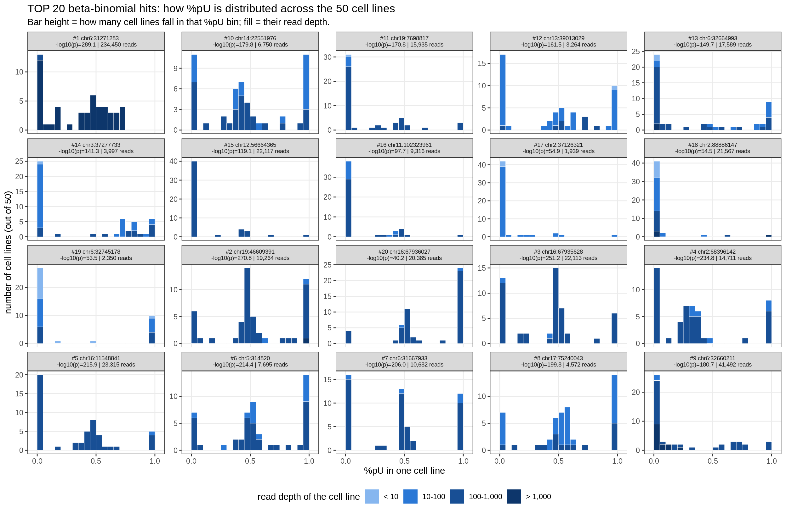
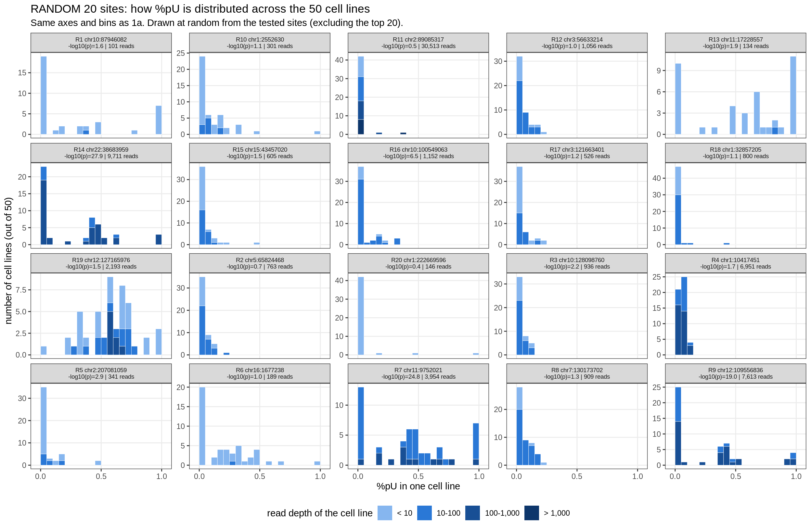
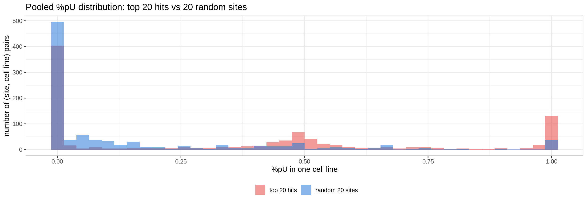
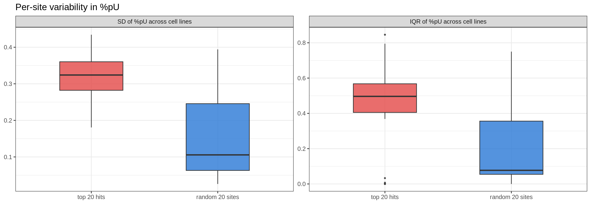
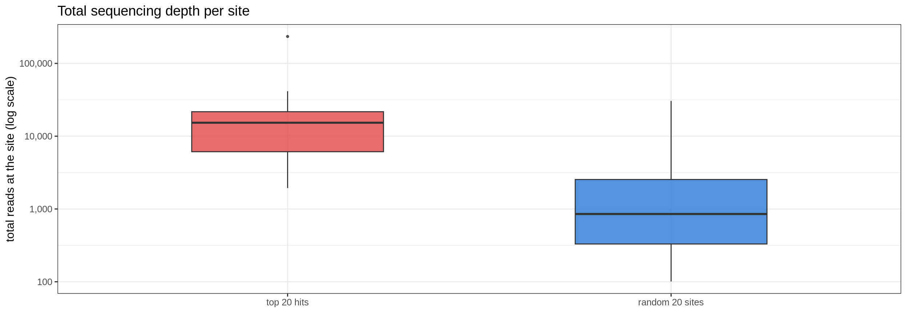

Last updated: 2026-08-14
Checks: 6 1
Knit directory: pumseq/
This reproducible R Markdown analysis was created with workflowr (version 1.7.0). The Checks tab describes the reproducibility checks that were applied when the results were created. The Past versions tab lists the development history.
The R Markdown is untracked by Git. To know which version of the R
Markdown file created these results, you’ll want to first commit it to
the Git repo. If you’re still working on the analysis, you can ignore
this warning. When you’re finished, you can run
wflow_publish to commit the R Markdown file and build the
HTML.
Great job! The global environment was empty. Objects defined in the global environment can affect the analysis in your R Markdown file in unknown ways. For reproduciblity it’s best to always run the code in an empty environment.
The command set.seed(20260202) was run prior to running
the code in the R Markdown file. Setting a seed ensures that any results
that rely on randomness, e.g. subsampling or permutations, are
reproducible.
Great job! Recording the operating system, R version, and package versions is critical for reproducibility.
Nice! There were no cached chunks for this analysis, so you can be confident that you successfully produced the results during this run.
Great job! Using relative paths to the files within your workflowr project makes it easier to run your code on other machines.
Great! You are using Git for version control. Tracking code development and connecting the code version to the results is critical for reproducibility.
The results in this page were generated with repository version 057f474. See the Past versions tab to see a history of the changes made to the R Markdown and HTML files.
Note that you need to be careful to ensure that all relevant files for
the analysis have been committed to Git prior to generating the results
(you can use wflow_publish or
wflow_git_commit). workflowr only checks the R Markdown
file, but you know if there are other scripts or data files that it
depends on. Below is the status of the Git repository when the results
were generated:
Ignored files:
Ignored: analysis/qtl_mapping_summary_cache/
Untracked files:
Untracked: analysis/qtl_mapping_betabinomial_why_same_tophits.Rmd
Unstaged changes:
Deleted: render_binomial_updated_52688698.out
Deleted: render_qtl_summary_52179078.out
Deleted: render_qtl_summary_52179478.out
Note that any generated files, e.g. HTML, png, CSS, etc., are not included in this status report because it is ok for generated content to have uncommitted changes.
There are no past versions. Publish this analysis with
wflow_publish() to start tracking its development.
suppressMessages({ library(data.table); library(ggplot2) })
knitr::opts_chunk$set(
echo = TRUE, warning = FALSE, message = FALSE,
fig.align = "center", fig.width = 13, fig.height = 15
)
PROJECT_DIR <- "/project/xinhe/xsun/pumseq"
BASE <- file.path(PROJECT_DIR, "pumseq_processed/psi_qtl")
BBR <- file.path(BASE, "qtl_betabinomial/lrt_results_merged")
CALIB <- file.path(BASE, "qtl_betabinomial/lrt_calibration")
COUNTS <- file.path(BASE, "phenotype/fold5_union/counts")
PSAM <- file.path(BASE, "genotype/plink2/pumseq_genotype.hg38.chr1-22.psam")
WINDOW_KB <- 5
NPCS <- 3
N_TOP <- 20
SEED <- 2026 # for the random-site comparison set
SEQ_BLUE <- c("#cde2fb", "#9ec5f4", "#6da7ec", "#3987e5",
"#256abf", "#184f95", "#0d366b")
DEPTH_BRK <- c(10, 100, 1000, 10000)
GRP_COL <- c(`top 20 hits` = "#e34948", `random 20 sites` = "#2a78d6")In the top-hit diagnostic we found that 19 of the 20 top sites under a random permutation are the same sites as the real top 20, and that none of them share a lead SNP. That means the site gets selected for reasons that have nothing to do with genotype — permuting the phenotype does not dislodge it.
This page asks what is different about those sites. We start with the simplest question: how is %pU distributed at the top sites, compared with ordinary sites?
C <- fread(file.path(COUNTS, "C_matrix.txt.gz"))
N <- fread(file.path(COUNTS, "N_matrix.txt.gz"))
go <- fread(PSAM)[[2]]
Cm <- as.matrix(C[, ..go]); Nm <- as.matrix(N[, ..go])
sid_all <- paste(C$ref, C$pos)
res <- fread(file.path(BBR, sprintf("scan_lrt_w%dkb_pc%d.txt.gz", WINDOW_KB, NPCS)))
res[, sid := paste(ref, pos)]
setorder(res, nominal_min_p)
top_ids <- res$sid[seq_len(N_TOP)]
set.seed(SEED)
rand_ids <- sample(setdiff(res$sid, top_ids), N_TOP) # random comparison set
# long table: one row per (site, cell line)
mk <- function(ids, grp) rbindlist(lapply(seq_along(ids), function(k) {
i <- match(ids[k], sid_all)
r <- res[sid == ids[k]]
data.table(group = grp, ord = k, sid = ids[k],
# %.1f not %.0f for -log10(p): the random sites sit at 0.4-2,
# which %.0f would print as "0" / "1" / "2".
lab = sprintf("%s%d chr%s:%.0f\n-log10(p)=%.1f | %s reads",
if (grp == "top 20 hits") "#" else "R", k,
r$ref, r$pos, -log10(max(r$nominal_min_p, 1e-300)),
format(sum(Nm[i, ]), big.mark = ",")),
pu = Cm[i, ] / Nm[i, ], n = Nm[i, ])
}))
dat <- rbind(mk(top_ids, "top 20 hits"), mk(rand_ids, "random 20 sites"))
dat <- dat[is.finite(pu)]
dat[, log_n := log10(pmax(n, 1))]
dat[, group := factor(group, levels = names(GRP_COL))]Each panel is one site. Bar height is a real count – how many of the
50 cell lines fall in that %pU bin – and each bar is split by read
depth, so you can see whether the cell lines in a bin are shallow or
deep. The panel header gives that site’s -log10(p) and its
total read count.
The two groups are shown as separate figures so they can be read on their own terms; note the y-axis is free per panel, since counts differ a lot between sites.
dat[, depth_bin := cut(n, breaks = c(-Inf, 10, 100, 1000, Inf),
labels = c("< 10", "10-100", "100-1,000", "> 1,000"))]
DEPTH_FILL <- c("< 10" = "#86b6ef", "10-100" = "#2a78d6",
"100-1,000" = "#184f95", "> 1,000" = "#0d366b")
# One builder for both groups so the two figures stay directly comparable.
plot_pu_hist <- function(dd, title, subtitle) {
ggplot(dd, aes(x = pu, fill = depth_bin)) +
geom_histogram(breaks = seq(0, 1, by = 0.05), colour = "white",
linewidth = 0.15) +
scale_fill_manual(values = DEPTH_FILL, drop = FALSE,
name = "read depth of the cell line",
guide = guide_legend(nrow = 1,
override.aes = list(colour = NA))) +
scale_x_continuous(limits = c(-0.03, 1.03), breaks = c(0, 0.5, 1)) +
facet_wrap(~ lab, ncol = 5, scales = "free_y") +
labs(x = "%pU in one cell line",
y = "number of cell lines (out of 50)",
title = title, subtitle = subtitle) +
theme_bw(base_size = 11) +
theme(legend.position = "bottom", strip.text = element_text(size = 7),
panel.grid.minor = element_blank())
}plot_pu_hist(dat[group == "top 20 hits"],
"TOP 20 beta-binomial hits: how %pU is distributed across the 50 cell lines",
"Bar height = how many cell lines fall in that %pU bin; fill = their read depth.")
plot_pu_hist(dat[group == "random 20 sites"],
"RANDOM 20 sites: how %pU is distributed across the 50 cell lines",
"Same axes and bins as 1a. Drawn at random from the tested sites (excluding the top 20).")
The same values, pooled within each group, so the overall shape is directly comparable.
ggplot(dat, aes(x = pu, fill = group)) +
geom_histogram(bins = 40, position = "identity", alpha = 0.55, colour = NA) +
scale_fill_manual(values = GRP_COL, name = NULL) +
labs(x = "%pU in one cell line", y = "number of (site, cell line) pairs",
title = "Pooled %pU distribution: top 20 hits vs 20 random sites") +
theme_bw(base_size = 12) + theme(legend.position = "bottom")
shape <- dat[, .(
`(site, cell line) pairs` = .N,
`median %pU` = sprintf("%.3f", median(pu)),
`%pU < 0.05` = sprintf("%.1f%%", 100 * mean(pu < 0.05)),
`%pU > 0.95` = sprintf("%.1f%%", 100 * mean(pu > 0.95)),
`intermediate (0.05-0.95)` = sprintf("%.1f%%", 100 * mean(pu >= 0.05 & pu <= 0.95)),
`median depth` = round(as.numeric(median(n)))
), by = group]
knitr::kable(shape, caption = "Shape of the %pU distribution, and depth, by group")| group | (site, cell line) pairs | median %pU | %pU < 0.05 | %pU > 0.95 | intermediate (0.05-0.95) | median depth |
|---|---|---|---|---|---|---|
| top 20 hits | 985 | 0.331 | 42.8% | 15.3% | 41.8% | 191 |
| random 20 sites | 953 | 0.002 | 58.7% | 4.0% | 37.4% | 13 |
If the top sites simply had more between-cell-line variability in %pU, that would be an obvious candidate explanation. This compares the per-site spread (standard deviation and interquartile range of %pU across cell lines) between the two groups.
# as.numeric() on the medians: median() of an INTEGER vector returns integer
# when the group size is odd and double when it is even, so the column type
# flips between sites and data.table refuses to rbind the groups.
per_site <- dat[, .(sd_pu = sd(pu), iqr_pu = IQR(pu),
med_depth = as.numeric(median(n)),
tot_depth = as.numeric(sum(n))), by = .(group, sid)]
knitr::kable(per_site[, .(
sites = .N,
`median SD of %pU` = sprintf("%.3f", median(sd_pu)),
`median IQR of %pU` = sprintf("%.3f", median(iqr_pu)),
`median depth per cell line` = round(as.numeric(median(med_depth))),
`median total depth` = format(round(as.numeric(median(tot_depth))), big.mark = ",")
), by = group], caption = "Per-site spread of %pU, and depth, by group")| group | sites | median SD of %pU | median IQR of %pU | median depth per cell line | median total depth |
|---|---|---|---|---|---|
| top 20 hits | 20 | 0.324 | 0.496 | 206 | 15,323 |
| random 20 sites | 20 | 0.106 | 0.077 | 14 | 854 |
ggplot(melt(per_site, id.vars = c("group", "sid"),
measure.vars = c("sd_pu", "iqr_pu")),
aes(x = group, y = value, fill = group)) +
geom_boxplot(width = 0.5, outlier.size = 0.8, alpha = 0.8) +
facet_wrap(~ variable, scales = "free_y",
labeller = as_labeller(c(sd_pu = "SD of %pU across cell lines",
iqr_pu = "IQR of %pU across cell lines"))) +
scale_fill_manual(values = GRP_COL, guide = "none") +
labs(x = NULL, y = NULL, title = "Per-site variability in %pU") +
theme_bw(base_size = 12)
Depth is the variable that separated these groups in the earlier diagnostic, shown here on the same footing as the %pU summaries above.
ggplot(per_site, aes(x = group, y = tot_depth, fill = group)) +
geom_boxplot(width = 0.5, outlier.size = 0.8, alpha = 0.8) +
scale_y_log10(labels = scales::comma) +
scale_fill_manual(values = GRP_COL, guide = "none") +
labs(x = NULL, y = "total reads at the site (log scale)",
title = "Total sequencing depth per site") +
theme_bw(base_size = 12)
sessionInfo()R version 4.2.0 (2022-04-22)
Platform: x86_64-pc-linux-gnu (64-bit)
Running under: CentOS Linux 8
Matrix products: default
BLAS/LAPACK: /software/openblas-0.3.13-el8-x86_64/lib/libopenblas_skylakexp-r0.3.13.so
locale:
[1] C
attached base packages:
[1] stats graphics grDevices utils datasets methods base
other attached packages:
[1] ggplot2_3.4.2 data.table_1.14.4 workflowr_1.7.0
loaded via a namespace (and not attached):
[1] tidyselect_1.2.0 xfun_0.38 bslib_0.3.1 colorspace_2.0-3
[5] vctrs_0.6.1 generics_0.1.3 htmltools_0.5.7 yaml_2.3.5
[9] utf8_1.2.2 rlang_1.1.2 R.oo_1.24.0 jquerylib_0.1.4
[13] later_1.3.0 pillar_1.9.0 glue_1.6.2 withr_2.5.0
[17] R.utils_2.11.0 lifecycle_1.0.4 stringr_1.5.0 munsell_0.5.0
[21] gtable_0.3.0 R.methodsS3_1.8.1 evaluate_0.15 labeling_0.4.2
[25] knitr_1.42 callr_3.7.0 fastmap_1.1.0 httpuv_1.6.5
[29] ps_1.7.0 fansi_1.0.3 highr_0.9 Rcpp_1.0.11
[33] promises_1.2.0.1 scales_1.2.0 jsonlite_1.8.7 farver_2.1.0
[37] fs_1.5.2 digest_0.6.29 stringi_1.7.6 processx_3.5.3
[41] dplyr_1.1.2 getPass_0.2-2 rprojroot_2.0.3 grid_4.2.0
[45] cli_3.6.2 tools_4.2.0 magrittr_2.0.3 sass_0.4.1
[49] tibble_3.2.1 whisker_0.4 pkgconfig_2.0.3 rmarkdown_2.21
[53] httr_1.4.5 rstudioapi_0.14 R6_2.5.1 git2r_0.30.1
[57] compiler_4.2.0